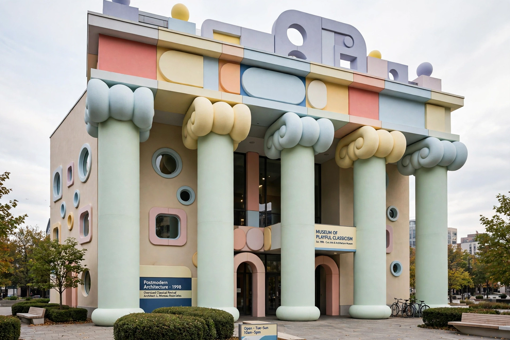

Postmodernism
From Wikipedia, the free encyclopedia

Postmodernism is a broad movement that emerged in the mid-to-late twentieth century across philosophy, art, architecture and literature, characterised by scepticism toward grand narratives and universal truths, self-consciousness, irony, eclecticism and the blurring of high and low culture. In philosophy it is associated with Jean-François Lyotard ('incredulity toward metanarratives', 1979), Derrida, Foucault and Baudrillard; in architecture, with Venturi, Graves and the revolt against modernist austerity.
Ideas
Lyotard's The Postmodern Condition (1979) defined the term philosophically: knowledge legitimated by performance rather than emancipation stories. Baudrillard's simulacra (copies without originals) and Jameson's 'cultural logic of late capitalism' framed the media-saturated world; deconstruction, intertextuality and pastiche became its literary methods (Calvino, Rushdie, Pynchon).
Criticism and after
Critics — Habermas (modernity as 'unfinished project'), Chomsky, Sokal (whose 1996 hoax paper mocked postmodern science-talk) — charged relativism and obscurantism. As a period style it faded by the 2000s into metamodern and 'post-truth' debates, but its operating assumptions — suspicion of authority, identity as constructed, irony as default — remain the water in which contemporary culture swims.